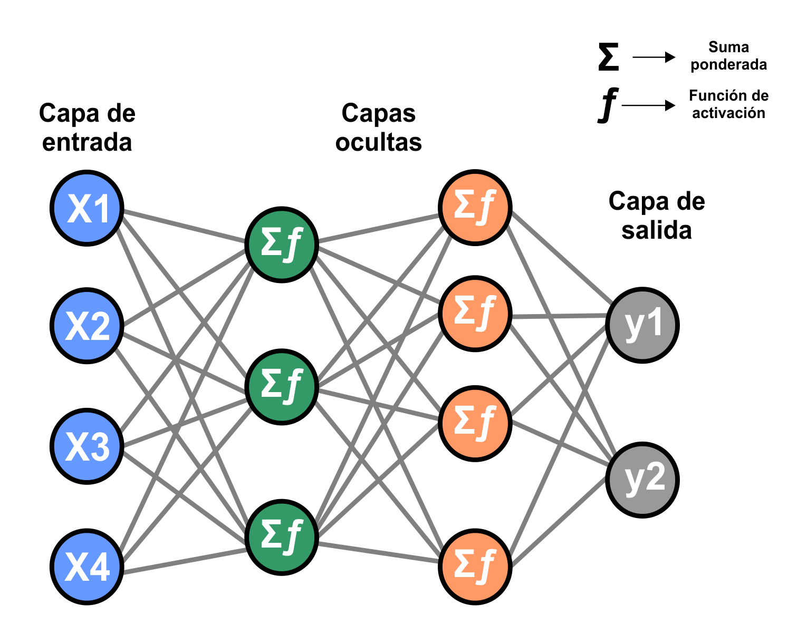
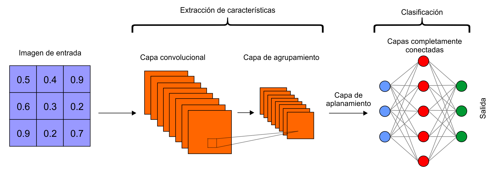
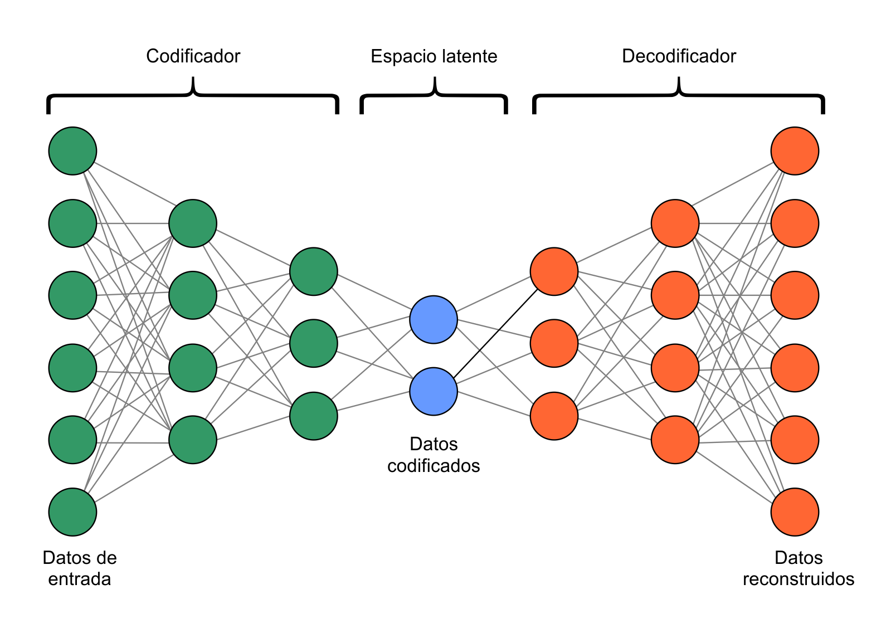

Haz clic en el gráfico de referencia para generar caracteres, o usa los sliders para ajustar manualmente.
Comprendiendo el Espacio Latente: Un Viaje a través de las Redes Neuronales
Esta aplicación interactiva te permite explorar un concepto fascinante en el mundo de las redes neuronales artificiales: el espacio latente. Pero para entender qué es y cómo funciona, primero necesitamos desentrañar algunos principios básicos de las mismas.
1. ¿Qué es una red neuronal artificial? El cerebro artificial
Imagina una red neuronal artificial como un "cerebro" simplificado diseñado para aprender de los datos. Está compuesta por capas de "neuronas" interconectadas, inspiradas en las neuronas biológicas.
- Neuronas: Cada neurona recibe una o más entradas, realiza una operación matemática (como una suma ponderada), y luego aplica una función de activación para producir una salida.
- Conexiones (pesos): Las conexiones entre neuronas tienen "pesos" asociados. Estos pesos son los parámetros que la red ajusta durante el entrenamiento para aprender patrones en los datos.
- Capas: Las neuronas se organizan en capas:
- Capa de entrada: Recibe los datos iniciales (por ejemplo, los píxeles de una imagen o las características de un objeto).
- Capas ocultas: Son las "cajas negras" donde ocurre la magia del procesamiento. Aquí, la red extrae características y patrones complejos de los datos.
- Capa de salida: Produce el resultado final de la red (por ejemplo, la clasificación de una imagen o un valor numérico).
El aprendizaje en una red neuronal artificial implica ajustar estos pesos y sesgos (valores adicionales que permiten a la neurona activar su salida incluso cuando sus entradas son cero) a través de un proceso llamado propagación hacia atrás (backpropagation) y descenso de gradiente (gradient descent), donde la red minimiza la diferencia entre sus predicciones y los valores reales.

Componentes básicos y flujo de datos en una red neuronal artificial.
2. Redes Neuronales Convolucionales (CNNs): Viendo el Mundo como Imágenes
Mientras que una red neuronal "densa" (totalmente conectada) es excelente para datos estructurados, no es la más eficiente para imágenes. Aquí es donde entran en juego las Redes Neuronales Convolucionales (CNNs o ConvNets), diseñadas específicamente para procesar datos con una topología conocida, como imágenes.
La clave de las CNNs radica en sus capas de convolución y agrupamiento (pooling):
- Capas de convolución: En lugar de conectar cada píxel a cada neurona (como lo haría una red densa), una capa de convolución utiliza pequeños "filtros" (también llamados kernels) que se "deslizan" sobre la imagen. Cada filtro detecta una característica específica, como bordes, esquinas o texturas.
- Operación de convolución: Es como pasar una pequeña ventana sobre la imagen, multiplicando los píxeles de la ventana por los valores del filtro y sumándolos. El resultado es un "mapa de características" que resalta dónde se encontró esa característica en la imagen original.
- Capas de agrupamiento (submuestreo): Estas capas reducen la dimensionalidad de los mapas de características. El tipo más común es el "Max Pooling", que toma el valor más grande dentro de una pequeña región, conservando la información más relevante y haciendo la red más robusta a pequeñas traslaciones.
Después de varias capas de convolución y agrupamiento, las características extraídas se "aplanan" y se pasan a capas densas para realizar la tarea final (clasificación, generación, etc.).

Proceso de extracción de características en una Red Neuronal Convolucional.
3. Autocodificadores: Aprendiendo a Comprimir y Generar
La aplicación que estás usando se basa en un tipo especial de red neuronal llamada autocodificador (autoencoder). Su objetivo principal es aprender una representación "comprimida" (o latente) de los datos de entrada y luego ser capaz de reconstruir el dato original a partir de esa representación comprimida.

Arquitectura básica de un Autocodificador: Codificador, Espacio Latente y Decodificador.
Un Autocodificador se compone de dos partes principales:
- Codificador (Encoder ): Toma los datos de entrada (en este caso, una imagen de un carácter) y los comprime en un vector de baja dimensión, el espacio latente. Este vector captura las características más importantes de la imagen. Por ejemplo, para un carácter, podría aprender dimensiones que representen "curvatura", "inclinación", "anchura", etc.
- En esta aplicación, el encoder sería una red convolucional que "lee" la imagen del carácter y produce los dos valores X e Y que ves en el espacio latente.
- Decodificador (Decoder ): Toma un punto del espacio latente (los valores X e Y que controlas con los sliders o haciendo clic) y lo "descomprime" para reconstruir la imagen original.
- En esta aplicación, el decoder es también una red convolucional (o una serie de capas convolucionales inversas/transpuestas) que toma los valores X e Y y los convierte en una imagen de carácter.
El autoencoder se entrena para que la imagen reconstruida sea lo más parecida posible a la imagen de entrada original. De esta manera, el espacio latente se convierte en un mapa significativo donde puntos cercanos representan caracteres similares, y moverte por este espacio te permite "generar" nuevos caracteres que son combinaciones intermedias de los caracteres que la red ha visto durante su entrenamiento.
¡Ahora, explora! Cada punto en el gráfico representa un carácter que la red ha aprendido. Al hacer clic o mover los sliders, estás navegando por este espacio latente, y el decodificador te muestra cómo se "imagina" el carácter en esa posición.